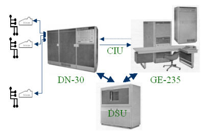

DTSS Emulator
Help
Login
Version 1.0
Users: 0
Thursday, January 11, 2024
Welcome to the DTSS Emulator, developed by John S. McGeachie '65. This program emulates the computer time-sharing system created at Dartmouth College in 1964 and used by students and faculty until 1967.

DTSS was designed by Dartmouth professors John G. Kemeny and Thomas E. Kurtz. John Kemeny wrote the Basic compiler; undergraduate students wrote the operating systems for the DN-30 and GE-235 computers, as well as most of the other system components.
Development of the emulator has been driven by Steve Hobbs '67, Tom Kurtz, and me. Steve and Tom tracked down listings of the two operating systems, Basic, and Algol. Steve scanned them so that we could easily access them. Tom has written a stand-alone emulator in True Basic, and I have benefited from his experience. Nicolás Alvarez helped me solve a problem with registering new users.
This web-based emulator has two components: a java-based application that emulates the GE-235
hardware
in minute detail, and an asp.net/C# application that generally emulates the DN-30
executive
. The two emulators communicate via sockets: one to emulate the Computer Interface Unit (CIU) that linked the DN-30 and GE-235 computers, and another to emulate the Disc Storage Unit (DSU) that was shared between the two computers.
The GE-235 emulator runs an August 1965 version of the GE-235 executive and a February 1965 version of Basic. Running on a reasonably fast PC, it executes GE-235 instructions at roughly 100 times the speed of the original hardware. We have an April 1966 version of Algol, which I have not yet tested. It is on my rather long to-do list. So is adding a HELP facility.
After logging in (you will need to register if you have not done so previously), click on the
ProgramEntry
link at the top right of the page to get started. Note: the LIB command (a newcomer) provides a list of library programs in the current language. There is no BYE command -- just close your browser.